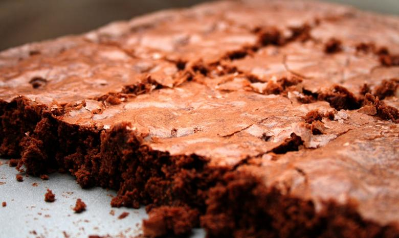

This easy brownie recipe takes minutes to whip up in one bowl and about 20 minutes to bake for a moist and fudgy crowd-pleasing treat.
Baking spray
2 cup white sugar
¼ cup all-purpose flour
1 cup unsalted butter, melted
4 large eggs, room temperature
1/2 cup cocoa powder
1 teaspoon vanilla extract
1/2 teaspoon baking powder
1/2 teaspoon salt
1/2 cup walnut halves
Gather all ingredients.
Preheat the oven to 350 degrees F (175 degrees C). Grease a 9x13-inch pan with baking spray.
Whisk sugar, flour, melted butter, eggs, cocoa powder, vanilla, baking powder, and salt in a large bowl until combined.
Spread the batter into the prepared pan.
Decorate with walnut halves
Bake in the preheated oven until top is crinkled and a toothpick comes out with a few moist crumbs, about 20 to 30 minutes.
Let cool completely in the pan on a wire rack before slicing into squares. Enjoy!